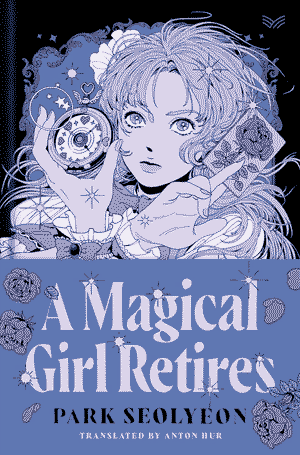
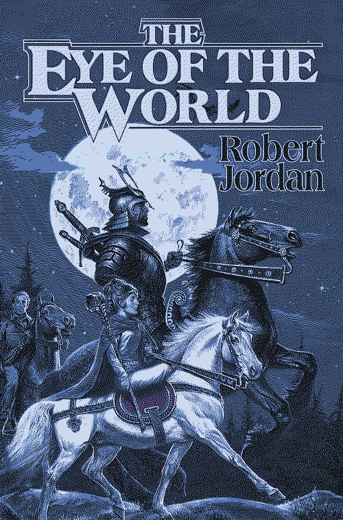

A Magical Girl Retires (2022)
03.05.25 | 03.06.25
"Flowing everywhere equally, never stopping nor retreating, that which is older and stronger than all else, I call upon the powers of time."
03.05.25 wah! very refreshing, short, and easy to read. a good interlude/palette cleanser between wheel of time and dracula.

Eye of the World (1990)
12.30.24 | 02.28.25
"The rose petal floats on water, the kingfisher flashes above the pond. Life and beauty swirl amidst of death."
this is the first book in the wheel of time series - very classic quest/adventure vibes. overall i really enjoyed it, i am glad i watched the show first though - it definitely handles some aspects of the narrative better than the book. it did feel like it was dragging a bit towards the end, but the last few chapters were pretty great!
what i liked:- "the wheel weaves as the wheel wills"
- the world philosophy/imagery of weaving, reincarnation, fate, life paths etc.
- the writing style, especially in tenser moments, is super evocative
- the world is really immersive
- small town kids seeing the world is very relatable and creates a lot of interesting dynamics and moments of growth
- relationships between the main group
- Rand is cool (sometimes too cool...)
- more nuanced characters overall
- more of Egwene, Nynaeve, and Moiraine's POV
03.04.25 - started the audible audiobook ready by Alan Cumming and Tim Curry and its been pretty fantastic so far!
was thinking about the comfort the characters find in journalling and writing down their experiences and how i'd like that (along with their amusingly dramatic language) to inspire my own journalling/snail mail practice
03.01.25 - picked up a used copy after seeing Nosferatu twice in janurary it felt like a natural progression after the bunch of vampiric media i've been watching the past few months (Interview with a Vampire, Buffy, Castlevania). When I told J i was planning on reading this they recommended Carmilla, so that's definitely next up once it comes in from my library hold